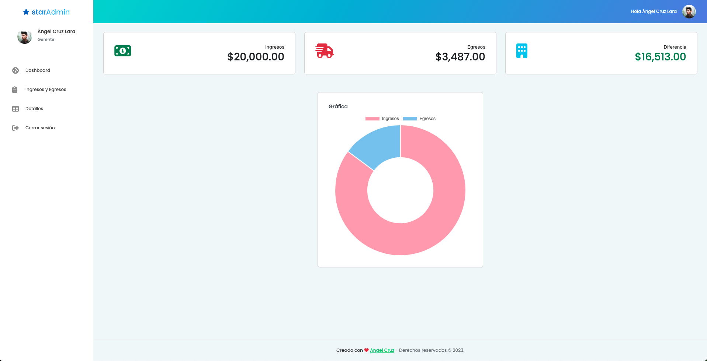

This project consist in a simple dashboard application to manage your income and expenses.
The project was created to practice the NgRx library implementation, how to use the Store, Effects, Actions, Reducers.
Also, can try another way to structure the project, using the modules and lazy loading (even with the NgRx implementation).
Project is created with:
After clone the repository, install the dependencies:
Example :npm installTo run the application, use the command:
Example :ng serveThis will available the application in the browser at the address: http://localhost:4200
You can create a new account or use the following credentials:
admin@test.com123456After login you can see the dashboard loaded with the data from the Firebase database.

You can see the details of the income and expenses in the table and add new items in other pages.
You can see the app running on Income Expenses App